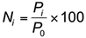
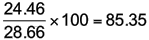
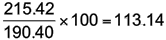

Un indice des prix à des mesures simples le prix d'un seul élément ou d'une marchandise en tant que pourcentage du prix d'un même article à une heure fixe, normalement dans le passé. Le temps fixé est appelée la période de base et peut être choisi pour des raisons pratiques (par exemple, Janvier 1er pour les données journalières, ou 2010 pour les données annuelles) ou parce que sa valeur est "modéré", c'est à dire ni anormalement élevée ni anormalement bas.
En supposant que la période est à des années, alors si P0 représente le prix dans l'année de base et Pi représente le prix dans l'année i, puis le numéro d'index pour l'année i est donnée par

L'indice des prix est simple: juste le prix actuel, exprimé en pourcentage du prix de l'année de base. Cependant, certains indices d'utiliser un facteur de 1000 au lieu de 100, surtout si l'on veut exprimer l'indice comme un nombre entier.
Prix spot du Brent Oil européenne
Le tableau ci-dessous montre le prix spot du Brent Oil européenne (en dollars US le baril) de 2000 à 2009.
Européenne Prix au comptant du pétrole Brent 2000 - 2009
2000
2001
2002
2003
2004
2005
2006
2007
2008
2009
28.66
24.46
24.99
28.85
38.26
54.57
65.16
72.44
96.94
61.74
En utilisant 2000 comme année de référence, l'indice des prix pour l'année 2001 est égal à

De même l'indice des prix pour l'année 2002 est égal à
La série complète est indiqué ci-dessous.
Européenne du pétrole Brent spot Indice des prix 2000 - 2009
2000
2001
2002
2003
2004
2005
2006
2007
2008
2009
100
85.35
87.19
100.66
133.50
190.40
227.36
252.76
338.24
215.42
L'indice nous permet de mesurer les changements en pourcentage de l'année de base. En 2001, le prix était d'environ 15% inférieur à celui de 2000 (85.35 − 100 = -14.65), mais en 2009, il était de 115% plus élevé (215.42 − 100 = 115.42). Notez que:
Un indice inférieur à 100 signifie que le prix de cette année a été plus faible que l'année de base;
Un indice supérieur à 100 signifie que le prix de cette année était plus élevé que l'année de base;
L'année de base a toujours un indice de 100 (ou 1000).
Le tableau des séries temporelles ci-dessous montre comment le prix du pétrole a changé au cours de la décennie. Les numéros d'index tout simplement redimensionner les valeurs ainsi à la fois les prix et les numéros d'index peut être affichée sur le même graphique avec deux axes.
Changer l'année de base
Dans la pratique, l'année de base est révisé de SVG en temps afin que des comparaisons puissent être effectuées avec une valeur de prix (c'est à dire non anciennes) récent. Par exemple, les trimestriels en Nouvelle-Zélande Indice des prix des consommateurs a une base actuelle de Juin 2006. Conversion d'un index existant à une nouvelle base est assez simple:
Voici «nouveau» se réfère à l'indice en utilisant la nouvelle base, «existant» se réfère à l'indice en utilisant la base existante, et "nouvelle base" se réfère à l'indice pour la nouvelle année de base en utilisant l'année de base existantes.
Prix spot du Brent Oil européenne
Pour convertir l'indice 2009 à une base de 2005,

Par conséquent, le prix de 2009 n'était que de 13.1% de plus qu'en 2005.